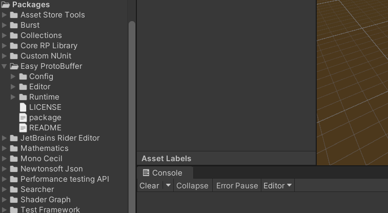
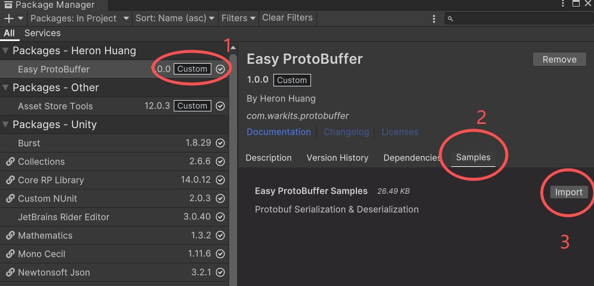
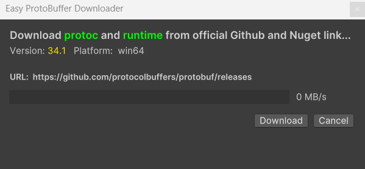
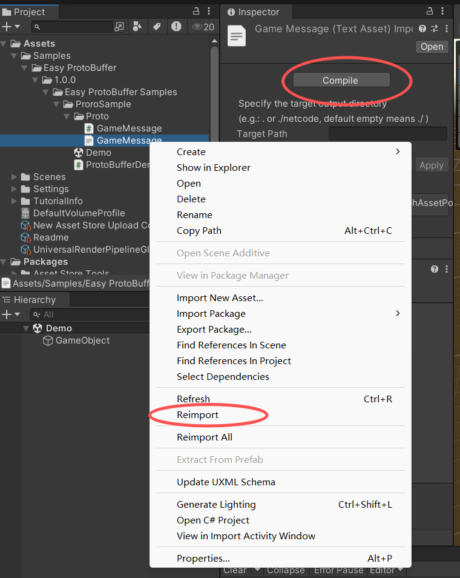
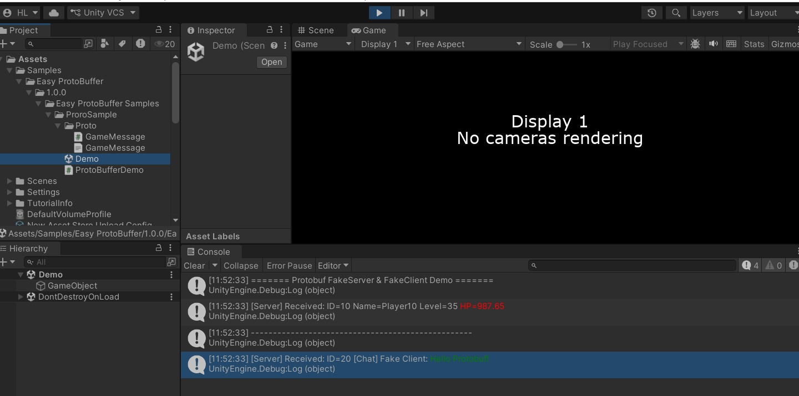

Quick Start
Import the EasyProtoBuffer package into your Unity project:
Step 1: Import Package
Launch your Unity project, then go to the top menu bar and select Assets > Import package>Custom Package . Pick up "EasyProto.unitypackage" and import.

Step 2: Import Sample
On top menu bar,select Window > Package Manager. Select Easy ProtoBuffer in the left side of the Package Manager window, then select samples and import samples.

Step 3: Download Protoc and Runtime
Importing the sample will trigger an automatic download; pressing "Download" will fetch the official protoc and Protocol Buffer runtime DLL (for .NET 20). If this window does not pop up, proceed to Step 4.

Step 4: Manual Download (can be skipped if Step 3 works normally)
Select any .proto file in your project, such as "GameMessage.proto" in the sample you just imported in Step 3. Select the .proto file and click the Compile button in the inspector panel, or right-click and choose "Reimport" — both actions will trigger the download window mentioned in Step 3.

After downloading, the automatic compilation environment is set up successfully. Every .proto file in your project will be automatically converted to a C# file
Step 5: Open Demo scene
Open Demo scene,and press play
